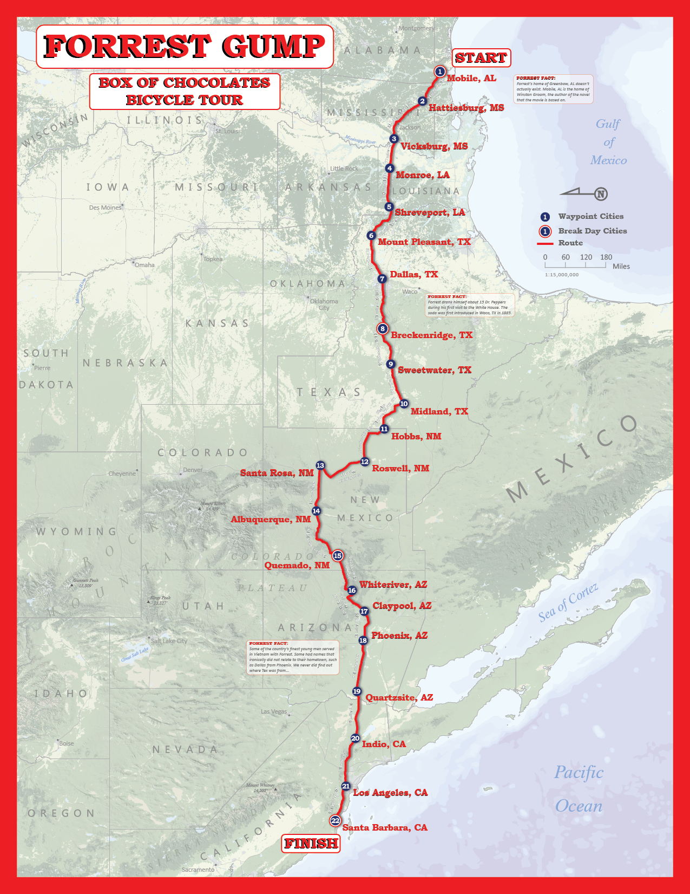

This map was designed as a terrain representation map for an advanced cartography course at the University of Wisconsin - Madison.
I thought that it would be cool to base the route on the movie Forrest Gump and his first run across the country.
I created the hillshade in ArcMap using the spatial analyst extension from DEMs from Viewfinder Panoramas.
Physical feature data was acquired from Natural Earth. I then finished the map with Adobe PhotoShop, editing the landcover and hillshade, and Illustrator,
adding the final vector elements.
One of my favorite challenges from this map was due to the orientation (east up). We tend to always see the United States with north pointing up,
thus the labels typically run east-west. Finding places where the labels seemed centered and fit well in the state shape while running north-south
was an interesting aspect in the creation of this map. The full map is shown below.
